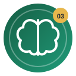
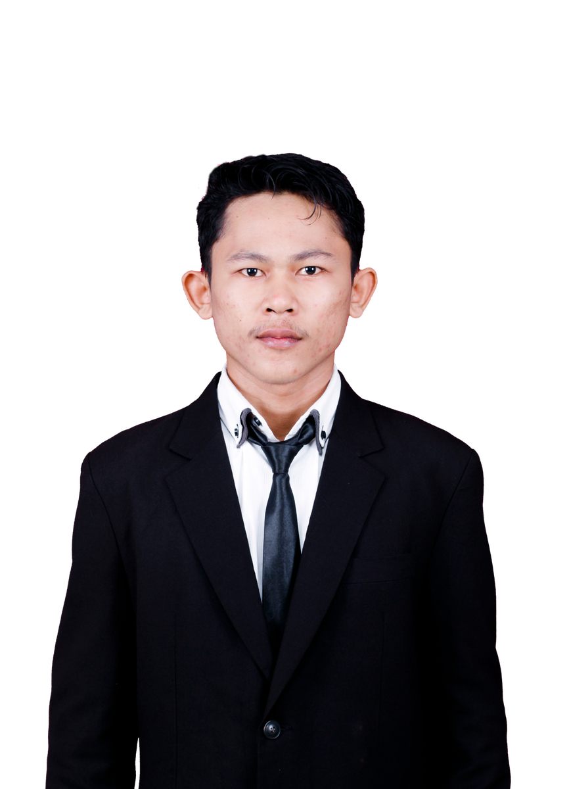
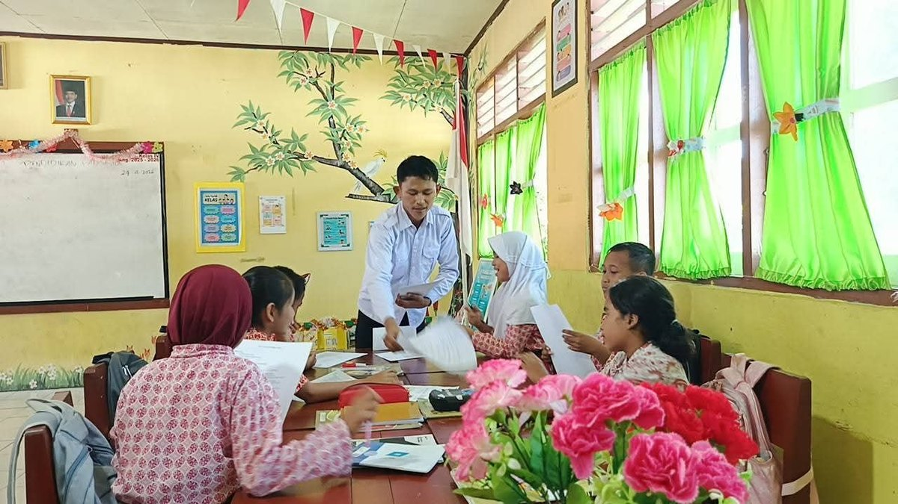
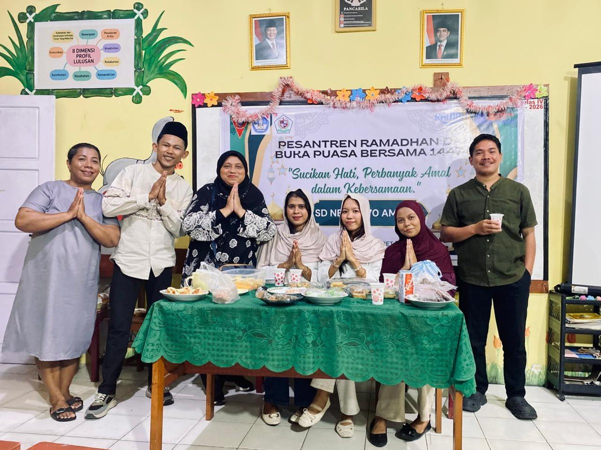
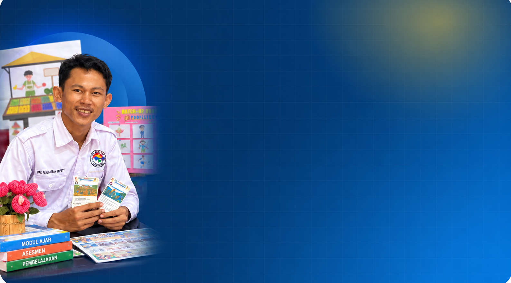

01
Filosofi Pendidikan dan Pendidikan Nilai
Memaknai kembali peran guru sebagai pendidik.
Setiap mata kuliah menghadirkan pengalaman, tantangan, konsep baru, dan perubahan bermakna yang saya rangkum dalam portofolio ini.
Memaknai kembali peran guru sebagai pendidik.
Memahami siapa yang saya didik.

Merancang pembelajaran yang bermakna.

Menghubungkan teori dengan praktik nyata.

Belajar dari tantangan untuk terus berkembang.
Merancang pembelajaran dengan lebih terarah.
Pendidikan bukan hanya tentang apa yang diajarkan, tetapi tentang siapa yang dibentuk.
Enam refleksi disusun dengan kerangka Connection, Challenge, Concept, dan Change (4C), lalu diperkuat dengan analisis artefak pembelajaran yang berasal dari pekerjaan Semester I.

PPG Prajabatan · Pendidikan Guru Sekolah Dasar · Universitas Pattimura
Semester I membentuk alur belajar yang saling terhubung. Saya mulai dari memaknai pendidikan dan peran guru, kemudian belajar memahami keragaman peserta didik, merancang pembelajaran mendalam, menguji teori dalam PPL, menumbuhkan growth mindset, dan memperkuat perencanaan melalui kerangka Understanding by Design.
“Saya tidak lagi melihat pembelajaran hanya dari apa yang perlu saya ajarkan, tetapi juga dari siapa yang belajar, bukti pemahaman yang muncul, dan perubahan apa yang perlu saya lakukan setelah mengajar.”
Setiap mata kuliah memberikan lensa yang berbeda, tetapi semuanya bertemu pada satu tujuan: pembelajaran yang lebih berpihak pada murid, terencana, reflektif, dan dapat terus diperbaiki.
01Memahami pendidikan sebagai proses menuntun serta menempatkan nilai dan etika dalam keputusan guru.
Memaknai pendidikan →Belajar melihat murid secara holistik melalui asesmen awal, profiling, dan pembelajaran berpusat pada murid.
Memahami siapa yang belajar →Membedakan aktivitas yang sekadar aktif dengan pengalaman belajar yang menghasilkan pemahaman mendalam.
Merancang pengalaman bermakna →04Menghubungkan perencanaan dengan dinamika nyata kelas melalui praktik, umpan balik, dan refleksi.
Menguji teori dalam praktik →05Mengubah cara memandang kemampuan, kesalahan, tantangan, dan bahasa yang digunakan saat mendampingi murid.
Belajar dari tantangan →Menggunakan backward design untuk menyelaraskan tujuan, asesmen, dan pengalaman belajar.
Merancang lebih terarah →Pilih mata kuliah untuk membaca Connection, Challenge, Concept, Change, analisis artefak, dan perubahan praktis yang ingin saya lakukan.
Memaknai kembali peran guru sebagai pendidik yang menuntun, memberi teladan, dan mengambil keputusan dengan kesadaran nilai serta etika.
Materi perkuliahan ini menguatkan pemahaman saya bahwa menjadi guru bukan sekadar menyampaikan pengetahuan, tetapi menuntun murid agar berkembang sesuai kodrat alam dan kodrat zamannya. Pemikiran Ki Hadjar Dewantara, pendidikan kontekstual, pendidikan nilai, dan kode etik membuat saya semakin memahami bahwa keputusan guru perlu mempertimbangkan potensi, kebutuhan, lingkungan sosial budaya, serta martabat setiap murid.
Hal yang paling menantang adalah pergeseran dari kebiasaan melihat keberhasilan terutama dari tersampaikannya materi menuju pertanyaan yang lebih mendasar: apakah pembelajaran benar-benar berpihak pada murid dan relevan dengan kehidupannya. Studi kasus Ali yang mogok sekolah menunjukkan bahwa masalah belajar tidak selalu berasal dari kemampuan akademik, sehingga guru perlu mendengar dan memahami akar masalah sebelum memberi tuntutan.
Konsep utama yang saya pelajari ialah pendidikan sebagai proses menuntun; kodrat alam dan kodrat zaman; pembelajaran kontekstual; Pancasila sebagai landasan nilai; peran guru dalam menanamkan nilai; dan kode etik sebagai pedoman tindakan profesional. Nilai harus hadir dalam keteladanan, komunikasi, keputusan, perlakuan terhadap perbedaan, dan budaya kelas.
Saya ingin lebih konsisten memulai pembelajaran dari kondisi nyata murid, memberi ruang untuk mendengar kebutuhan mereka, menggunakan contoh yang dekat dengan lingkungan, serta menghindari satu standar untuk semua. Dalam mengambil keputusan, saya juga ingin lebih sadar pada nilai, etika, dan dampaknya bagi murid, lalu menjadikan refleksi sebagai kebiasaan profesional.
Artefak pilihan: Refleksi dan Aksi Nyata serta tugas Kode Etik dalam Kerangka Pendidikan Nilai. Artefak tersebut menunjukkan proses dari memahami filosofi dan nilai hingga merumuskan tindakan sebagai calon guru.
Bagian yang paling mendukung: rancangan tindakan yang berpusat pada diri, murid, dan sekolah serta penegasan bahwa perilaku dan keputusan guru harus berpijak pada nilai dan menjaga kepentingan murid.
Belajar melihat murid secara lebih holistik dan menggunakan data sebagai dasar keputusan pembelajaran.
Pembelajaran yang baik harus dimulai dari pemahaman terhadap siapa yang belajar. Saat melakukan asesmen awal dan profiling kelas III SD Negeri 70 Ambon, saya menemukan variasi kemampuan dan kebutuhan belajar pada 19 murid: 11 kategori mandiri/tinggi, 7 berkembang/sedang, dan 1 membutuhkan bimbingan lebih dekat. Data itu menegaskan bahwa satu kelas tidak pernah benar-benar seragam.
Tantangan paling menonjol adalah mengubah kebiasaan merancang pembelajaran berdasarkan asumsi umum tentang kelas menjadi pembelajaran berbasis data tentang murid. Saya juga belajar untuk tidak terburu-buru memberi label karena murid yang pasif, mudah terdistraksi, atau belum mampu menjawab bisa saja memerlukan dukungan, cara penyajian, waktu, atau rasa aman yang berbeda.
Konsep penting meliputi karakteristik dan perkembangan peserta didik, perbedaan individu, teori belajar, motivasi, pembelajaran berpusat pada murid, asesmen awal, profiling, pengelolaan kelas, pembelajaran inklusif, dan diferensiasi. Asesmen dan observasi saya pahami sebagai sumber informasi untuk menentukan dukungan, strategi, media, pengelompokan, dan tindak lanjut.
Saya ingin membiasakan asesmen awal dan profiling sebelum menyusun keputusan pembelajaran, lalu menggabungkan data tes dengan observasi keterlibatan, kemandirian, keberanian bertanya, interaksi sosial, dan kebutuhan dukungan. Perkembangan murid akan saya catat berkala agar rancangan berikutnya dapat diperbaiki berdasarkan data, bukan dugaan.
Artefak pilihan: Lembar Kerja Aktivitas 4b Rekomendasi Desain Pembelajaran dan Laporan UAS PPDP. Keduanya menunjukkan proses dari pengumpulan data, analisis kebutuhan, hingga perancangan tindak lanjut.
Bagian yang paling mendukung: pemetaan 19 murid serta temuan bahwa kebutuhan belajar tidak hanya terkait hasil tes, tetapi juga fokus, keberanian, kemandirian, kerja sama, dan rasa nyaman.
Belajar merancang pengalaman yang tidak berhenti pada aktivitas, tetapi menghasilkan pemahaman dan bukti belajar.
Mata kuliah ini berkaitan langsung dengan tugas calon guru untuk merancang pembelajaran yang tidak berhenti pada aktivitas yang ramai atau penyelesaian tugas, tetapi menghasilkan pemahaman yang bermakna. Melalui analisis kasus, perencanaan, implementasi, dan refleksi, saya belajar menghubungkan tujuan, pengalaman belajar, asesmen, dan konteks kehidupan murid.
Tantangan terbesar adalah membedakan pembelajaran yang sekadar aktif dengan pembelajaran yang benar-benar mendalam. Diskusi, proyek, atau media belum otomatis menghasilkan pemahaman apabila pertanyaan, tugas, dan asesmennya masih dangkal. Saya juga melihat bahwa murid aktif dapat mendominasi kelompok sementara murid lain tetap pasif.
Konsep utama meliputi pembelajaran mendalam yang berkesadaran, bermakna, dan menggembirakan; keterkaitan pengetahuan dengan situasi nyata; aktivitas berpikir tingkat tinggi; asesmen sebagai bagian dari siklus pembelajaran; keselarasan tujuan, kegiatan, dan bukti belajar; serta refleksi dan perbaikan berkelanjutan.
Saya ingin memulai dari pengalaman nyata murid dan pertanyaan pemantik yang lebih tajam, membagi peran agar partisipasi kelompok lebih merata, menggunakan asesmen formatif selama proses, serta memakai refleksi penutup untuk melihat bukan hanya apa yang murid ketahui, tetapi bagaimana mereka memahami dan menggunakan pengetahuan tersebut.
Artefak pilihan: Praktik Implementasi Pembelajaran Mendalam dan RTL Topik 3. Artefak implementasi menunjukkan penerapan langsung, sedangkan RTL menunjukkan bahwa hasil praktik dibaca kembali untuk menemukan kekurangan dan menentukan perbaikan konkret.
Bagian yang paling mendukung: tujuan yang meminta murid mengidentifikasi, menganalisis, berdiskusi, dan menyajikan solusi, lalu temuan bahwa pertanyaan pemantik masih terlalu umum dan partisipasi belum merata diperbaiki melalui konteks yang lebih dekat, pembagian peran, dan bantuan sesuai kebutuhan.
Ruang paling nyata untuk menghubungkan teori perkuliahan dengan praktik profesional di sekolah.
Di SD Negeri 70 Ambon saya tidak hanya mengamati pembelajaran, tetapi juga melakukan asistensi, menyusun perangkat, menyiapkan media, melaksanakan praktik dalam beberapa siklus, melakukan asesmen, menerima umpan balik, dan merefleksikan pembelajaran. Saya memahami bahwa kompetensi guru terbentuk melalui proses mencoba, mengamati respons murid, menerima masukan, lalu memperbaiki praktik.
Tantangan utama adalah perbedaan antara rencana yang terlihat baik di atas kertas dan dinamika kelas yang sebenarnya. Murid memiliki kemampuan, keberanian, konsentrasi, dan kecepatan belajar berbeda; waktu terbatas; partisipasi kelompok tidak selalu merata; dan media tetap membutuhkan pertanyaan serta cara penggunaan yang tepat.
Konsep penting yang saya peroleh adalah praktik reflektif, pengelolaan kelas, asesmen berkelanjutan, adaptasi pembelajaran, media kontekstual, scaffolding, dan kolaborasi profesional. Perencanaan, pelaksanaan, asesmen, dan refleksi merupakan satu rangkaian yang tidak dapat dipisahkan.
Saya ingin lebih disiplin menyiapkan pembelajaran berdasarkan data awal murid, menyiapkan alternatif ketika strategi pertama tidak berjalan, membuat peran kelompok lebih terstruktur, dan mengumpulkan bukti sederhana selama pembelajaran agar evaluasi setelah mengajar tidak hanya berdasarkan perasaan. Setiap refleksi harus menghasilkan satu atau dua perbaikan yang benar-benar dilaksanakan.
Artefak pilihan: Modul Ajar Siklus II, LK Refleksi Siklus II, dan dokumentasi perjalanan PPL. Kombinasi tersebut memperlihatkan teori yang diterjemahkan menjadi rencana, pelaksanaan nyata, umpan balik, lalu perbaikan dari satu siklus ke siklus berikutnya.
Bagian yang paling mendukung: identifikasi karakteristik murid yang beragam, penggunaan media dan diskusi, catatan hasil praktik, serta perbaikan berdasarkan masukan guru pamong dan pengalaman kelas.
Mengubah bahasa, respons, dan cara memandang kemampuan agar murid melihat tantangan sebagai bagian dari proses belajar.
Cara guru memandang kemampuan murid akan memengaruhi cara memberi tugas, menanggapi kesalahan, dan memberi umpan balik. Kalimat “belum bisa” memiliki makna berbeda dari “tidak bisa”. Ketika guru percaya kemampuan dapat berkembang melalui usaha, strategi, latihan, dan bantuan yang tepat, guru terdorong mencari pendekatan yang membantu murid bertumbuh.
Saya menyadari bahwa fixed mindset dapat muncul secara halus ketika terlalu cepat menilai murid berdasarkan hasil, membandingkan kecepatan belajar, atau menganggap metode yang pernah berhasil akan selalu cocok. Mata kuliah ini menantang saya untuk melihat kesalahan sebagai informasi tentang bagian yang perlu diperbaiki.
Konsep utama meliputi fixed mindset dan growth mindset, kemampuan otak untuk terus berkembang melalui proses belajar, makna kata “belum”, nilai dari tantangan dan kesalahan, serta umpan balik yang berfokus pada proses, usaha, strategi, dan perkembangan. Growth mindset juga berkaitan dengan kreativitas, inovasi, keberanian mencoba, refleksi, dan ketekunan.
Saya ingin mengubah bahasa dan respons di kelas. Ketika murid berkata “saya tidak bisa”, saya akan membantu mengubahnya menjadi “saya belum bisa” dan mencari strategi berikutnya. Saya akan mengurangi pujian yang hanya menekankan label “pintar”, lebih banyak mengapresiasi proses, ketekunan, keberanian bertanya, dan perbaikan, serta menjadikan kesalahan sebagai bahan diskusi yang aman.
Artefak pilihan: LK “Aku Belum Berhasil, Bukan Tidak Berhasil”, “Guru yang Menumbuhkan Growth Mindset”, dan “Mengubah Responmu untuk Kelas Bertumbuh”. Artefak tersebut membentuk alur dari memahami konsep hingga menerapkannya dalam respons guru di kelas.
Bagian yang paling mendukung: perubahan kalimat dari “aku gagal lagi, percuma mencoba” menjadi “aku belum berhasil, jadi harus mencoba lagi”, serta respons guru “kalau murid tidak paham, berarti saya perlu mencoba cara lain”.
Mengubah cara merancang dari “aktivitas apa yang menarik?” menjadi “pemahaman apa yang harus dicapai dan bukti apa yang menunjukkannya?”.
Melalui Understanding by Design (UbD), saya belajar bahwa guru tidak seharusnya memulai perencanaan dari daftar kegiatan, tetapi dari hasil belajar dan pemahaman yang ingin dicapai. Setelah itu guru menentukan bukti asesmen yang menunjukkan tercapainya pemahaman, baru kemudian merancang pengalaman belajar. Cara berpikir ini membuat perencanaan lebih terarah.
Materi paling berbeda dari kebiasaan sebelumnya adalah backward design. Sangat mudah memulai dari metode, media, atau aktivitas yang menarik, lalu menyesuaikan tujuan di belakang. UbD menuntut sebaliknya dan menantang saya memastikan setiap tujuan memiliki bukti asesmen yang tepat serta setiap kegiatan benar-benar mendukung tujuan tersebut.
Konsep utama ialah tiga tahap UbD: menentukan hasil yang diinginkan, menentukan bukti asesmen, dan merancang pengalaman belajar. Saya juga belajar tentang keselarasan tujuan–asesmen–aktivitas, pertanyaan esensial, transfer pemahaman, evaluasi rancangan, dimensi pengetahuan, serta rekomendasi perbaikan berbasis bukti.
Saya ingin membiasakan backward design saat menyusun modul ajar: memperjelas pemahaman dan kemampuan transfer, menentukan bukti yang benar-benar menunjukkan pemahaman, lalu memilih kegiatan, media, dan strategi. Sebelum digunakan, saya akan memeriksa keselarasan ketiga tahap dan memperbaiki bagian yang tidak mendukung tujuan.
Artefak pilihan: UTS Modul Ajar IPAS Kelas V berbasis UbD dan LK Evaluasi UbD. Artefak tersebut menunjukkan kemampuan merancang sekaligus menilai kembali keselarasan desain.
Bagian yang paling mendukung: struktur tiga tahap UbD serta temuan bahwa beberapa tujuan belum sepenuhnya selaras dengan bukti asesmen dan aktivitas, lalu diperbaiki melalui penguatan hasil yang diinginkan, bukti asesmen, dan kegiatan yang lebih terarah.
Artefak dipilih karena mendukung refleksi, bukan sekadar karena merupakan tugas. Gunakan filter untuk melihat bukti dari setiap mata kuliah.
Menerjemahkan pemahaman filosofis menjadi komitmen tindakan.
Menegaskan tanggung jawab moral dan profesional dalam keputusan guru.
Menggunakan data murid untuk menyusun rekomendasi desain pembelajaran.

Menghubungkan konteks, proses berpikir, diskusi, dan bukti pemahaman.

Bukti teori yang diterjemahkan menjadi rencana pembelajaran konkret.

Bukti bahwa praktik dibaca kembali untuk menentukan perbaikan.
Memperlihatkan perubahan bahasa dari fixed mindset ke growth mindset.

Respons guru terhadap kegagalan, ketakutan, dan koreksi di kelas.


Dokumentasi ini memperkuat bahwa refleksi tidak berdiri sendiri; ia lahir dari pengalaman nyata di kelas dan interaksi profesional selama PPL.







Enam pengalaman belajar Semester I mengubah cara saya melihat profesi guru. Filosofi pendidikan mengingatkan saya untuk menuntun; PPDP mengajarkan bahwa keputusan harus berangkat dari pemahaman terhadap murid; PMA menuntut kedalaman, bukan sekadar aktivitas; PPL menguji teori dalam dinamika kelas; growth mindset mengubah bahasa dan respons terhadap kegagalan; sedangkan UbD menata cara saya merancang agar tujuan, asesmen, dan pengalaman belajar benar-benar selaras.
Perubahan yang ingin saya jaga bukan hanya pada perangkat pembelajaran, tetapi pada kebiasaan profesional: mengumpulkan data sebelum mengambil keputusan, mendengar murid, merancang dengan tujuan yang jelas, mencari bukti pemahaman, menerima umpan balik, dan selalu menentukan tindak lanjut setelah refleksi.